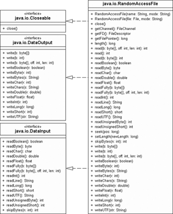

15.2 Dateien mit wahlfreiem Zugriff
Dateien können auf zwei unterschiedliche Arten gelesen und modifiziert werden: zum einen über einen Datenstrom, der Bytes wie in einem Medien-Stream verarbeitet, zum anderen über wahlfreien Zugriff (engl. random access). Während der Datenstrom eine strenge Sequenz erzwingt, ist dies beim wahlfreien Zugriff egal, da innerhalb der Datei beliebig hin und her gesprungen werden kann und ein Dateizeiger verwaltet wird, den wir setzen können. Da wir es mit Dateien zu tun haben, heißt das Ganze dann Random Access File, und die Klasse, die wahlfreien Zugriff anbietet, ist java.io.RandomAccessFile.
Abbildung 15.2: UML-Diagramm der Klasse RandomAccessFile
15.2.1 Ein RandomAccessFile zum Lesen und Schreiben öffnen
Die Klasse deklariert zwei Konstruktoren, um mit einem Dateinamen oder File-Objekt ein RandomAccessFile-Objekt anzulegen. Im Konstruktor bestimmt der zweite Parameter eine Zeichenkette für den Zugriffsmodus; damit lässt sich eine Datei lesend oder schreibend öffnen. Die Angabe vermeidet Fehler, da eine zum Lesen geöffnete Datei nicht versehentlich überschrieben werden kann.
| Modus | Funktion |
| r | Die Datei wird zum Lesen geöffnet. Wenn sie nicht vorhanden ist, wird ein Fehler ausgelöst.
Der Versuch, auf diese Datei schreibend zuzugreifen, wird mit einer Exception bestraft. |
| rw | Die Datei wird zum Lesen oder Schreiben geöffnet. Eine existierende Datei wird dabei geöffnet, und hinten können die Daten angehängt werden, ohne dass die Datei gelöscht wird. Existiert die Datei nicht, wird sie neu angelegt, und ihre Startgröße ist null. Soll die Datei gelöscht werden, so müssen wir dies ausdrücklich über delete() der File-Klasse selbst tun. |
Zusätzlich lässt sich bei rw noch ein s oder d anhängen; sie stehen für Möglichkeiten, beim Schreiben die Daten mit dem Dateisystem zu synchronisieren.
class java.io.RandomAccessFile |
- RandomAccessFile(String name, String mode) throws FileNotFoundException
- RandomAccessFile(File file, String mode) throws FileNotFoundException
Öffnet die Datei. Ob die Datei zum Lesen oder Schreiben vorbereitet ist, bestimmt der String mode mit gültigen Belegungen »r« oder »rw«. Ist der Modus falsch gesetzt, zeigt eine IllegalArgumentException dies an. Löst eine FileNotFoundException[207](Eingedeutscht »DöösIschNetDoo«.) aus, falls die Datei nicht geöffnet werden kann. - void close()
Schließt eine geöffnete Datei wieder.
15.2.2 Aus dem RandomAccessFile lesen
Um Daten aus einer mit einem RandomAccessFile verwalteten Datei zu bekommen, nutzen wir eine der readXXX()-Methoden. Sie lesen direkt das Byte-Feld aus der Datei oder mehrere Bytes, die zu einem primitiven Datentyp zusammengesetzt sind. readChar()etwa liest hintereinander 2 Byte und verknüpft diese zu einem char.
class java.io.RandomAccessFile |
- int read() throws IOException
Liest genau ein Byte und liefert es als int zurück. - int read(byte[] b) throws IOException
Liest b.length() viele Bytes und speichert sie im Feld b. - int read(byte[] b, int off, int len) throws IOException
Liest len Bytes aus der Datei und schreibt sie in das Feld b ab der Position off. Wurden mehr als ein, aber weniger als len Bytes gelesen, wird die gelesene Größe als Rückgabewert zurückgegeben. - final boolean readBoolean() throws IOException
- final byte readByte() throws IOException
- final short readShort() throws IOException
- final int readInt() throws IOException
- final long readLong() throws IOException
- final char readChar() throws IOException
- final double readDouble() throws IOException
- final float readFloat() throws IOException
Liest einen primitiven Datentyp. - final int readUnsignedByte() throws IOException
Liest ein als vorzeichenlos interpretiertes Byte. - final int readUnsignedShort() throws IOException
Liest zwei als vorzeichenlos interpretierte Bytes. - final void readFully(byte[] b) throws IOException
Versucht, den gesamten Puffer b zu füllen. - final void readFully(byte[] b, int off, int len) throws IOException
Liest len Bytes und speichert sie im Puffer b ab dem Index off.
Zum Schluss bleiben zwei Methoden, die eine Zeichenkette liefern:
- final String readLine() throws IOException
Liest eine Textzeile, die das Zeilenendezeichen \r oder \n beziehungsweise eine Kombination \r\n abschließt. Die letzte Zeile muss nicht so abgeschlossen sein, denn ein Dateiende zählt als Zeilenende. readLine() interpretiert die Zeichen nicht als Unicode, sondern übernimmt die Zeichen einfach als ASCII-Bytes. (Ohne die Konvertierung verschiedener Codepages, etwa von einer Datei in einem ungewohnten IBM-Format, liest readLine() nicht die korrekten entsprechenden Unicode-Zeilen heraus. Diese Byte-in-Char-Umwandlung müsste manuell vorgenommen werden.) Auch weil RandomAccessFile nicht puffert, bietet sich aus Geschwindigkeitsgründen eine zeilenweise Verarbeitung von ASCII-Dateien über readLine() nicht an, und die passende Klasse Scanner oder BufferedReader sollte Verwendung finden. - final String readUTF()
Liest einen modifizierten UTF-kodierten String und gibt einen Unicode-String zurück. Ein UTF-String fasst entweder 1, 2 oder 3 Byte zu einem Unicode-Zeichen zusammen. Der übernächste Abschnitt erklärt die Kodierung genauer.
Rückgabe –1 und EOFException *
Die Methoden liefern nicht alle einen Fehler, wenn die Datei schon fertig abgearbeitet wurde und keine Daten mehr anliegen. Im Fall von int read(), int read(byte[]) oder int read(byte[], int, int) gibt es einfach den Rückgabewert –1 und keine Exception. Ähnliches gilt für readLine(). Die Methode liefert null am Dateiende. Für die anderen Lese-Methoden gilt, dass sie eine bestimmte Anzahl Bytes erzwingen, etwa readLong() 8 – oder auch nur 1 Byte für readByte() –, sodass im Fall eines Dateiendes eine EOFException folgt. Bis auf wenige Ausnahmen gibt es kaum weitere Einsatzgebiete von EOFException in der Java-Bibliothek.
15.2.3 Schreiben mit RandomAccessFile
Da RandomAccessFile die Schnittstellen DataOutput und DataInput implementiert, werden zum einen die readXXX()-Methoden wie bisher vorgestellt implementiert und zum anderen eine Reihe von Schreibmethoden der Form writeXXX(). Diese sind analog zu den Lesemethoden:
- write(byte[] b)
- write(int b)
- write(byte[] b, int off, int len)
- writeBoolean(boolean v)
- writeByte(int v)
- writeBytes(String s)
- writeChar(int v)
- writeChars(String s)
- writeDouble(double v)
- writeFloat(float v)
- writeInt(int v)
- writeLong(long v)
- writeShort(int v)
- writeUTF(String str)
Der Rückgabetyp ist void, und die Methoden können eine IOException auslösen.
15.2.4 Die Länge des RandomAccessFile
Mit zwei Methoden greifen wir auf die Länge der Datei zu: einmal schreibend (verändernd) und einmal lesend.
class java.io.RandomAccessFile |
- void setLength(long newLength) throws IOException
Setzt die Größe der Datei auf newLength. Ist die Datei kleiner als newLength, wird sie mit unbestimmten Daten vergrößert; wenn die Datei größer war als die zu setzende Länge, wird die Datei abgeschnitten. Dies bedeutet, dass der Dateiinhalt mit setLength(0) leicht zu löschen ist. - long length() throws IOException
Liefert die Länge der Datei. Schreibzugriffe erhöhen den Wert, und setLength() modifiziert ebenfalls die Länge.
15.2.5 Hin und her in der Datei
Die bisherigen Lesemethoden setzen den Datenzeiger automatisch eine Position weiter. Wir können den Datenzeiger jedoch auch manuell an eine selbst gewählte Stelle setzen und damit durch die Datei navigieren.
| Beispiel |
|
Erzeuge eine Datei, und setze an die Stelle 1.000 das Byte 0xFF: Listing 15.1: com/tutego/insel/io/raf/CreateBigFile.java, main() RandomAccessFile file = new RandomAccessFile("c:/test.bin", "rw" ); |
Die nachfolgenden Lese- oder Schreibzugriffe setzen dann dort an. Die im Folgenden beschriebenen Methoden haben etwas mit diesem Dateizeiger und seiner Position zu tun:
class java.io.RandomAccessFile |
- long getFilePointer() throws IOException
Liefert die momentane Position des Dateizeigers. Das erste Byte steht an der Stelle null. - void seek(long pos) throws IOException
Setzt die Position des Dateizeigers auf pos. Diese Angabe ist absolut und kann daher nicht negativ sein. Falls doch, wird eine Ausnahme ausgelöst. file.seek(file. length()); setzt den Zeiger auf das Ende der Datei. - int skipBytes(int n) throws IOException
Im Gegensatz zu seek() positioniert skipBytes() relativ. n ist die Anzahl, um die der Dateizeiger bewegt wird. Ist n negativ, werden keine Bytes übersprungen. Eine relative Positionierung mit positivem und negativem n für ein RandomAccessFile raf erreicht raf.seek(raf.getFilePointer() + n). Die Summe darf aber nicht negativ sein, sonst gibt es von seek() eine IOException. Die Rückgabe gibt die tatsächlich gesprungenen Bytes zurück, was nicht mit n identisch sein muss!
Setzt seek() den Zeiger weiter, als es möglich ist, wird die Datei dadurch nicht automatisch größer. Sie verändert jedoch ihre Größe, wenn Daten geschrieben werden.
Ihr Kommentar
Wie hat Ihnen das <openbook> gefallen? Wir freuen uns immer über Ihre freundlichen und kritischen Rückmeldungen.
 Jetzt bestellen
Jetzt bestellen


{kind=link}